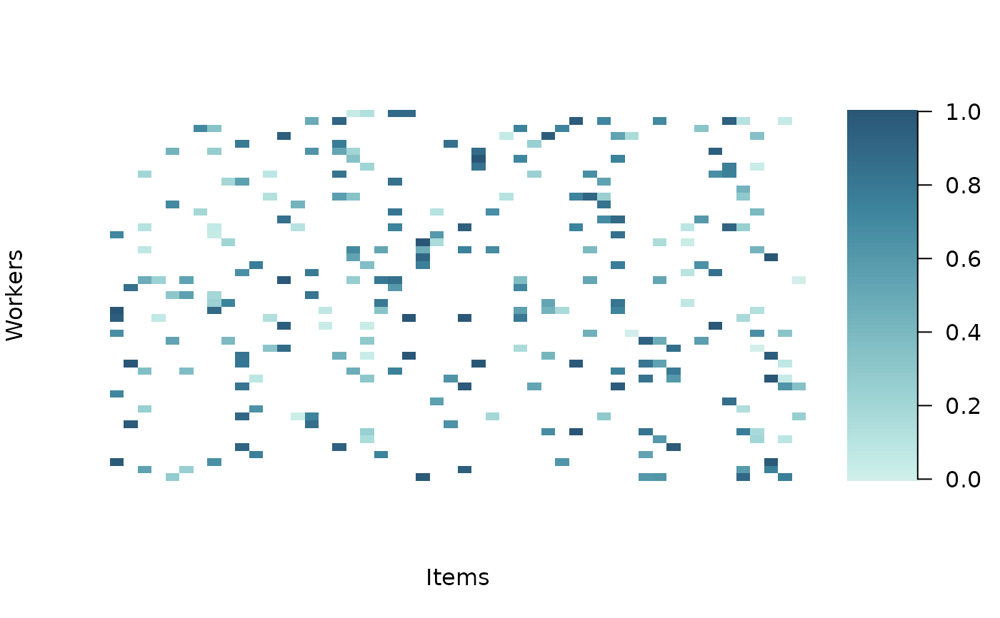

Plot data
Arguments
- RATINGS
Ratings vector of dimension n. Ordinal data must be coded in {1, 2, ..., K}. Continuous data can take values in
(0, 1).- ITEM_INDS
Index vector with items allocations. Same dimension as
RATINGS.- WORKER_INDS
Index vector with worker allocations. Same dimension as
RATINGS. Ignored when MODEL == "oneway". Must be integers in {1, 2, ..., J}.- VERBOSE
Verbose output.
Examples
set.seed(321)
# setting dimension
items <- 50
budget_per_item <- 5
n_obs <- items * budget_per_item
# item-specific intercepts to generate the data
alphas <- runif(items, -2, 2)
# true agreement (between 0 and 1)
agr <- .6
# generate continuous rating in (0,1)
dt <- sim_data(
J = items,
B = budget_per_item,
AGREEMENT = agr,
ALPHA = alphas,
DATA_TYPE = "continuous",
SEED = 123
)
plot_data(
RATINGS = dt$rating,
ITEM_INDS = dt$id_item,
WORKER_INDS = dt$id_worker
)
